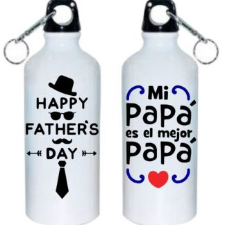
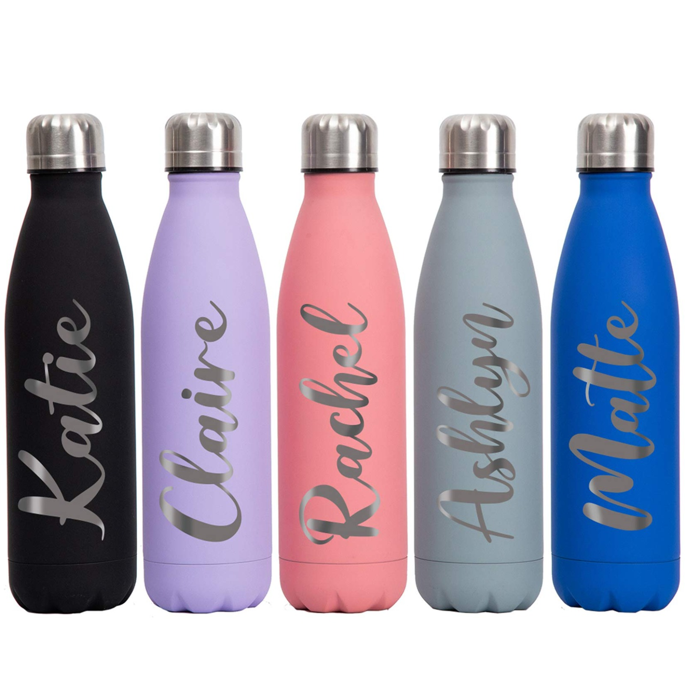
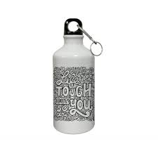

Botellas Alumunio Sublimadas
Las botellas de aluminio sublimadas son recipientes reutilizables personalizables,
ideales para mantener bebidas frías o calientes. Están fabricadas con aluminio resistente
y recubiertas con un material especial que permite la impresión por sublimación, logrando diseños nítidos, coloridos y duraderos.
Son perfectas para uso diario, promociones, regalos personalizados, eventos deportivos o escolares.
Además, combinan funcionalidad, estilo y sostenibilidad, ya que ayudan a reducir el uso de plásticos desechables.


